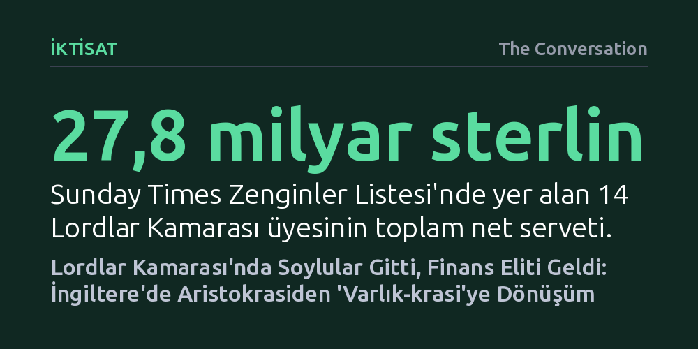

IKTISAT · The Conversation · 2026-10-24
İngiltere Lordlar Kamarası'nda veraset kökenli soyluların yerini, güçlerini mülk ve finansal varlıklarından alan yeni bir zenginler sınıfı aldı. Araştırma, en varlıklı üyelerin meclis çalışmalarına daha az katılırken sermaye birikimini ve varlık sahipliğini koruyan politikaları savunduğunu gösteriyor.
Geleneksel aristokrasinin ve soyluluk unvanlarının tasfiyesinin siyaseti kendiliğinden demokratikleştirmeye yetmediğini, boşalan iktidar alanını hızla mülk ve finansal varlığa dayalı yeni bir seçkinler sınıfının doldurduğunu gösteriyor.

Birleşik Krallık parlamentosunun üst kanadı olan Lordlar Kamarası, yüzyıllar boyunca toprak sahibi geleneksel aristokrasinin kalesi konumundaydı. 1999'da Tony Blair hükümetiyle başlayan ve 2026'da kalan son 92 veraset kökenli üyenin çıkarılmasıyla tamamlanan reformlar, kamarayı aristokratik vesayetten kurtarma vaadi taşıyordu. Bir dönem kırmızı meclis sıralarını dolduran yaklaşık 800 asilzadenin meclisten uzaklaştırılması, liyakate dayalı ve toplumu daha iyi temsil eden bir parlamento umudu doğurmuştu. Ancak Birmingham Üniversitesi'nde yürütülen kapsamlı bir araştırma, aristokratların gidişinin kurumu daha az elitist kılmadığını, aksine ayrıcalığın yalnızca biçim değiştirdiğini ortaya koyuyor.
Araştırmacılar, 18 ay boyunca Lordlar Kamarası üyelerinin tüm hisse portföylerini, şirket yöneticiliklerini, gayrimenkul varlıklarını, kira gelirlerini, eğitim geçmişlerini ve oylama kayıtlarını tarayarak parlamentonun bugüne kadarki en kapsamlı finansal veri tabanını oluşturdu. Sonuçlar, toprak sahibi soyluların yerini sermaye, finans ve mülk zenginliğine dayalı yeni bir zümrenin, yani bir "varlık-krasinin" (assetocracy) aldığını gösteriyor. Soy bağına dayalı imtiyazlar tasfiye edilirken, yerlerine modern finansal kapitalizmin getirdiği servet imtiyazları yerleşmiş durumda.
Elde edilen veriler, Lordlar Kamarası'ndaki ekonomik yoğunlaşmanın boyutlarını gözler önüne seriyor. Kamaradaki 260'tan fazla üye, halka açık şirketlerde her biri 100 bin sterlinin üzerinde değere sahip birden fazla hisse senedi paketini elinde tutuyor. Bazı lordların portföyünde bu ölçekte 200'ü aşkın bağımsız hisse yatırımı bulunuyor; bu da sadece söz konusu hisselerin alt sınır değerinin bile onlarca milyon sterlini aştığı anlamına geliyor. Dahası, Birleşik Krallık'ın en zengin isimlerini sıralayan Sunday Times Zenginler Listesi'ndeki 14 lordun toplam net varlığı 27,8 milyar sterline ulaşıyor.
Ayrıcalık yalnızca borsadaki hisselerle de sınırlı değil. Meclis üyelerinin yaklaşık yarısı düzenli kira geliri elde eden mülk sahiplerinden oluşuyor ve 250 üye en az bir ücretli şirket yönetim kurulu üyeliği yürütüyor. Pek çok lord, parlamentodaki günlük 371 sterlinlik ödeneklerinin yanı sıra özel sektördeki danışmanlık ve yöneticilik rollerinden yıllık 100 bin ila 300 bin sterlin arasında gelir elde ediyor. Bu tabloya eğitim eşitsizliği de ekleniyor: Genel nüfusta özel okul mezunlarının oranı yalnızca yüzde 7 iken, lordların neredeyse yarısı özel okullardan, üçte biri ise Oxford veya Cambridge'den mezun. Kısacası kurum, Birleşik Krallık toplumunun ekonomik ve sosyal gerçekliğinden tamamen kopuk bir zenginlik havuzunu barındırıyor.
Lordlar Kamarası'ndaki varlık yoğunlaşmasının en çarpıcı sonuçlarından biri, servet miktarı ile yasama faaliyetlerine katılım arasındaki ters orantı. Araştırma, en zengin lordların meclis oturumlarına daha seyrek katıldığını, kürsüde daha az söz aldığını ve komisyon çalışmalarına çok daha sınırlı katkı sunduğunu ortaya koyuyor. Özellikle siyasi partilere yaptıkları yüklü bağışlar karşılığında lordluk unvanı alan bazı isimlerin, bu kamusal makamı sadece bir prestij ve statü sembolü olarak kullandığı, meclisin rutin işleyişine neredeyse hiç dahil olmadığı görülüyor.
Ancak bu ilgisizlik, üyelerin ekonomik çıkarları söz konusu olduğunda yerini belirgin bir ideolojik savunuculuğa bırakıyor. Kamara üyeleri, servetin vergilendirilmesi ve yeniden dağıtımı gibi konular gündeme geldiğinde siyasi tartışmanın sınırlarını daraltmak için nüfuzlarını kullanıyor. Lordlar Kamarası'ndaki hava, sermayenin ve mülk sahipliğinin imtiyazlarını korumayı adeta bir erdem gibi sunuyor. Nitekim Muhafazakâr Partili bir lordun meclis konuşmasında, "Çocuklara sözde kazanılmış gelirin risk almadan ödendiğini, oysa sermaye riskine dayanan kazanılmamış gelirin daha büyük bir ödülü hak ettiğini öğretmeliyiz" demesi, meclis çoğunluğunun sermaye yanlısı bakış açısını açıkça yansıtıyor.
Araştırma, Lordlar Kamarası'nın toptan kapatılması gerektiği sonucuna varmıyor; aksine uzmanlık gerektiren birçok yasa tasarısında üst kanadın metinleri titizlikle inceleyip iyileştirdiğini teslim ediyor. Kamarayı bütünüyle lağvetmek, yürütmeyi denetleyen önemli bir demokratik sigortayı ortadan kaldırabilir. Bunun yerine başbakanın tek taraflı atama yetkisinin sınırlandırılması, katılım için asgari devam zorunluluğu getirilmesi, finansal çıkar beyanlarının şeffaflaştırılması ve çıkar çatışması yaratan dış görevlerin sıkı biçimde denetlenmesi gibi somut reform adımları öneriliyor.
Ne var ki araştırma, parlamentodaki tablonun çok daha derin ve yapısal bir toplumsal dönüşümün aynası olduğunu vurguluyor. Son elli yılda İngiltere ekonomisi, üretken emekten ziyade gayrimenkul, finansal varlık ve hisse sahipliği üzerinden zenginleşilen bir rant düzenine evrildi. Dolayısıyla veraset kökenli asilzadeleri kırmızı koltuklardan indirmek, sistemin ürettiği sınıfsal ayrımı ortadan kaldırmaya yetmiyor. Gerçek çözüm, Lordlar Kamarası'nı dönüştürmenin ötesine geçip zenginliği yalnızca varlık sahipliğinde yoğunlaştıran ekonomik ve yapısal düzenle yüzleşmekten geçiyor.